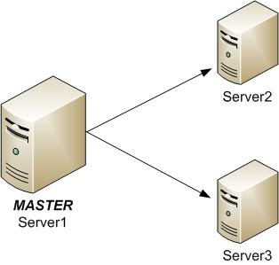

Balanceamento de carga entre serviços (Load Balance)
A configuração de balanceamento de carga visa a escalabilidade da aplicação e assim permitir o acesso de uma grande quantidade de usuários ao sistema.
Balanceamento de carga entre serviços (Load Balance)
Quando um único servidor (hardware) não possui uma configuração que comporte toda a carga gerada por um grande volume de usuários, é possível configurar uma nova instância da aplicação em um outro servidor disponível e balancear a carga de conexões entre eles.
Para que isto seja possível, "nomeamos" um servidor como Master que será o responsável por administrar o balanceamento e configuramos outros servidores como Slave para receber e administrar os usuários balanceados.
Configuração do servidor Master
Veja a seguir a configuração adicional a ser realizada no arquivo de configuração do servidor Master:
O único arquivo de configuração do servidor de aplicação que será alterado com as informações abaixo é o do servidor Master, pois é ele quem administrará o balanceamento de carga de conexões.
[ServerNetwork]
MasterConnection=0
Servers=SERVER2,SERVER3
[SERVER2]
Type=TCPIP
Server=172.16.77.42
Port=1234
Connections=1
[SERVER3]
Type=TCPIP
Server=172.16.75.62
Port=1235
Connections=1
Configuração dos servidores Slave
Os servidores Slave, aqueles que recebem os usuários balanceados, requerem o tratamento da chave RootPath e para isso o diretório raíz do ambiente que está no servidor Master deve ser compartilhado com um único usuário com direitos suficientes para acessar, manipular, remover arquivos e pastas e que será utilizado por todos os demais servidores Slave.
O tratamento da chave RootPath é necessário porque os arquivos e pastas do ambiente que outrora poderia ser acessado fisicamente serão acessados através de um compartilhamento.
Veja a seguir a alteração a ser realizada no arquivo de configuração dos servidores Slave, supondo que a raíz do ambiente esteja no servidor Master:
[Environment]
RootPath=\\SERVER1\protheus_data\
Observe que a raíz do ambiente é acessada através de um compartilhamento do servidor Master
O valor da chave Connections determina a distribuição entre os slaves usando RAZÃO MATEMÁTICA (Exemplo: 1:2:1). Caso não informe essa chave, ou informado o valor zero esse mesmo slave será desativado e não sera utilizado no balanceamento.
Observações sobre os servidores Master e Slave e o ambiente
Veja a seguir algumas observações sobre os servidores Master e Slave e o ambiente balanceado:
- Um mesmo tipo de sistema operacional deve ser utilizado no servidor Master e nos servidores Slave.
- Uma cópia do repositório e build deve ser utilizado no servidor Master e nos servidores Slave.
- Uma atualização de build ou de repositório quando realizada deve ser replicada nos demais servidores.
- Um mesmo usuário Windows deve ter direitos na pasta compartilhada (RootPath) e deverá ser um do grupo Administrador, para que possa ser associado ao serviço de cada servidor.
- O nome do ambiente e portas de comunicação deve ser idêntico para todos os servidores.
- Separe em um servidor dedicado, o ambiente de compilação: compilação é uma operação crítica, exclusiva, que não deve ser executada no mesmo serviço que atende as conexões de usuários do ambiente de produção.
- No caso de balanceamento de carga das conexões em schedule, deve-se escolher um slave para receber a conexão. Lembre-se que o servidor Master NÃO recebe conexões.
- O valor de RootPath=\\SERVER1\protheus_data\ deve ser a mesma para todas as instâncias para os ambientes Environment de mesmo nome. Para mais informações, consulte a documentação da seção ServerNetwork.
- Reserve 2 GB para cada instância do servidor de aplicação, que pode ser na mesma máquina desde que tenha capacidade para isso.
- Em um ambiente balanceado, cada ambiente deve ter seu próprio RPO, sendo todos iguais. NÃO compartilhe RPO em rede, pelos seguintes motivos:
-
- Em casos conhecidos os logs mostram que o sistema operacional está causando os erros de comunicação nos servidores de aplicação e não nas estações.
- As mensagens que as estações enviam no momento de uma nova conexão mostram que foi a parte servidora da operação que cortou a conexão de rede.
- Os servidores de aplicação fazem leitura intensiva dos RPOs quando executam o ERP, pois neles estão compiladas todas as regras de negócio, se o RPO é compartilhado em rede, tem como resultado:
-
- Degradação na performance de execução dos servidores de aplicação que utilizam o RPO compartilhado (tráfego de RPO em rede).
- O aumento do consumo de recursos de rede nos servidores que compartilham RPO, tipicamente, saturam o uso das interfaces de rede, criando uma concorrência de transmissão de dados com as estações que utilizam o TOTVS | SmartClient.
Outros tipo de balanceamento
O balanceamento de carga do Protheus não funciona como proxy reverso, ou seja, toda a comunicação não passa através do serviço de Protheus configurado como master, este apenas atua como distribuidor da carga de conexão, e este mecanismo foi construído para prover melhor eficiência do balanceamento, onde o master não passa a ser um ponto crítico do sistema – caso o master fique indisponível, os slaves continuam executando as conexões neles já estabelecidas. Caso seja necessário fazer um balanceamento de carga de rede para serviços como Telnet, RPC ( Advpl ) ou WebServices, o Protheus não provê uma solução nativa para essa situação, mas é possível utilizar soluções de mercado, disponíveis tanto em software quanto em hardware.
Existem diversas soluções, como o Network Load Balancing do Windows, o Linux Load Balancer da Red Hat, o HAProxy no Ubuntu, o ZEN Load Balancer, entre outros. Essas soluções podem ser utilizadas sem prejuízo ao comportamento do sistema, desde que elas sejam transparentes para a aplicação, onde não exista alteração dos pacotes trafegados. Para maiores informações, verifique com o fornecedor da solução se a mesma atende a este critério de transparência.